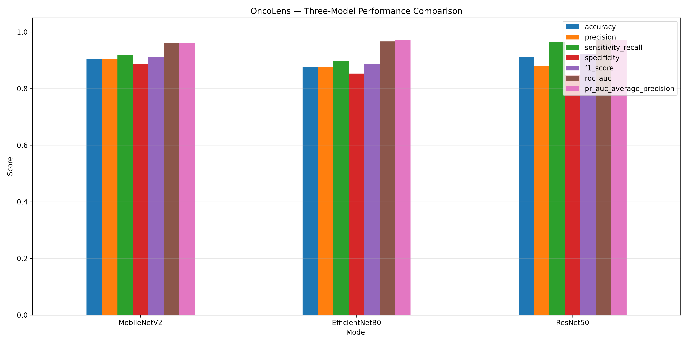
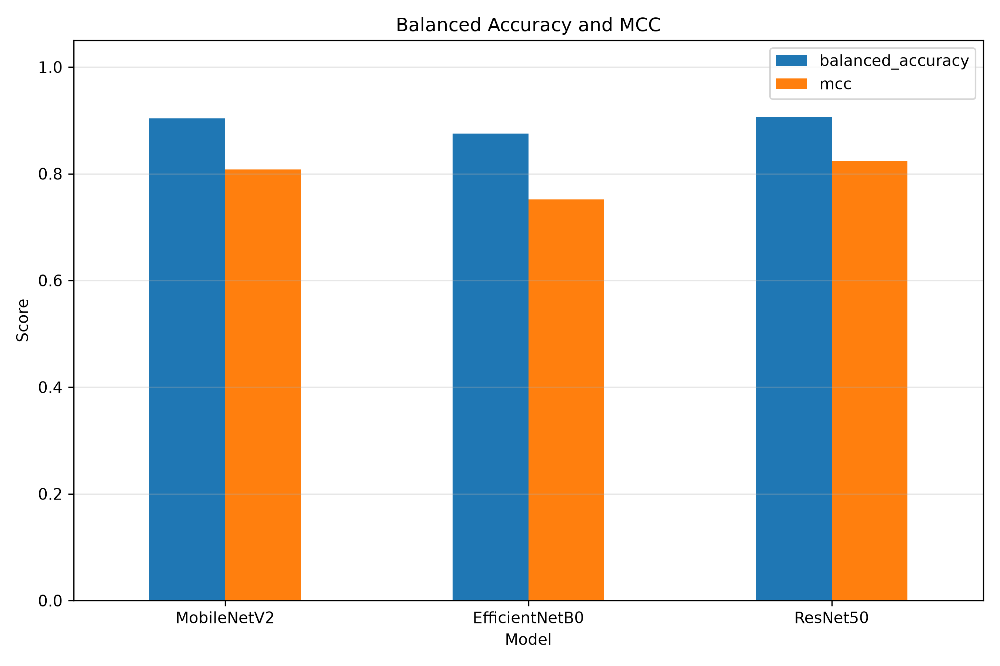
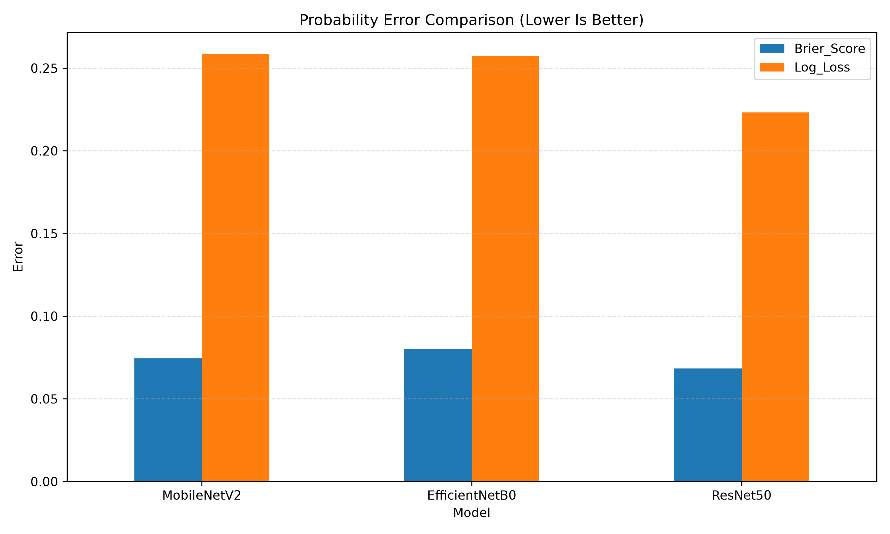
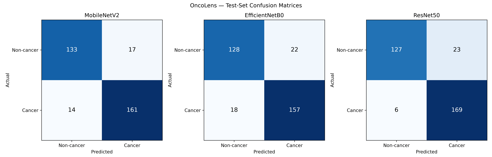

Models: MobileNetV2, EfficientNetB0, and ResNet50.
| Model | Accuracy | Precision | Sensitivity_Recall | Specificity | F1_Score | ROC_AUC | PR_AUC | Balanced_Accuracy | MCC | Brier_Score | Log_Loss |
|---|---|---|---|---|---|---|---|---|---|---|---|
| MobileNetV2 | 0.9046 | 0.9045 | 0.9200 | 0.8867 | 0.9122 | 0.9596 | 0.9629 | 0.9033 | 0.8080 | 0.0744 | 0.2587 |
| EfficientNetB0 | 0.8769 | 0.8771 | 0.8971 | 0.8533 | 0.8870 | 0.9665 | 0.9707 | 0.8752 | 0.7521 | 0.0803 | 0.2572 |
| ResNet50 | 0.9108 | 0.8802 | 0.9657 | 0.8467 | 0.9210 | 0.9707 | 0.9732 | 0.9062 | 0.8237 | 0.0683 | 0.2233 |
| Model | TN | FP | FN | TP |
|---|---|---|---|---|
| MobileNetV2 | 133 | 17 | 14 | 161 |
| EfficientNetB0 | 128 | 22 | 18 | 157 |
| ResNet50 | 127 | 23 | 6 | 169 |



